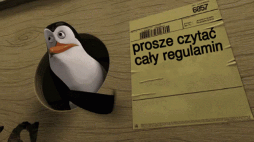

Teorie:
- javascript powstał w 1995.
- ponieważ daje obszerne możliwości wzbogacania stron w interesujące elementy.
- Cała magia dzieje się po stronie serwera.
dlaczego jest to bezpieczne narzędzie?
czy jest to język obiektowy , jeśli tak to dlaczego.?
